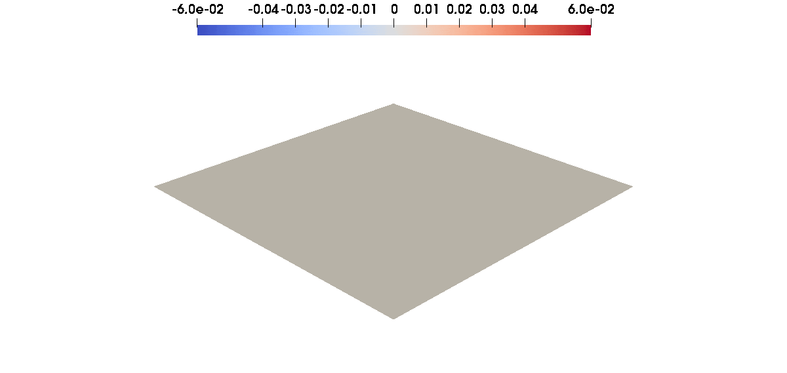

Tutorial 18: Transient nonlinear equation


In this tutorial, we will learn
- How to write a nonlinear transient weak form in Gridap
- How to setup a time-marching scheme for a nonlinear ODE
We assume that the reader is familiar with Gridap's API for linear transient PDEs, introduced in Tutorial 17. We focus here on more advanced features of the ODE module of Gridap, applied to a nonlinear time-dependent PDE.
Problem statement
We consider the same problem as in Tutorial 17, and use the same notations: find $u(t): \Omega \to \mathbb{R}$ such that
In this tutorial we consider a nonlinear (quadratic) conductivity coefficient $\alpha(t, x, u) = \alpha_{0}(t, x) + \alpha_{1}(t, x) u(t, x) + \alpha_{2}(t, x) u(t, x)^{2}$. Here again, we assume that the $\alpha_{i}$ are continuous in time. The weak form of the problem reads: find $u(t) \in U_{g}(t)$ such that $b(t, u, v) = \ell(t, v)$ for all $t \geq t_{0}$ and $v \in V_{0}$, where the time-dependent bilinear and linear forms $b(t, \cdot, \cdot)$ and $\ell(t, \cdot)$ are defined as
and the the functional spaces are $U_{g}(t) = \{u \in H^{1}_{g(t)}(\Omega), u \nabla u \in \boldsymbol{L}^{2}(\Omega), u^{2} \nabla u \in \boldsymbol{L}^{2}(\Omega)\}$ and $V_{0} = H^{1}_{0}(\Omega)$. In addition to the regularity conditions of Tutorial 17 on $f$, $g$ and $u_{0}$, we assume that for all $t \geq t_{0}$, it holds $\alpha_{i}(t) \in L^{\infty}(\Omega)$ and $(x, X) \mapsto \alpha_{0}(t, x) + \alpha_{1}(t, x) X + \alpha_{2}(t, x) X^{2}$ is uniformly positive in $\Omega \times \mathbb{R}$, i.e. $\alpha_{2}(t)$ and $4 \alpha_{0}(t) \alpha_{2}(t) - \alpha_{1}^{2}(t)$ are uniformly positive.
Discrete model, FE spaces, triangulation and quadrature
We consider the same mesh, FE spaces, triangulation and quadrature as in Tutorial 17:
using Gridap
domain = (-1, +1, -1, +1)
partition = (20, 20)
model = CartesianDiscreteModel(domain, partition)
order = 1
reffe = ReferenceFE(lagrangian, Float64, order)
V0 = TestFESpace(model, reffe, dirichlet_tags="boundary")
g(t) = x -> exp(-2 * t) * sinpi(t * x[1]) * (x[2]^2 - 1)
Ug = TransientTrialFESpace(V0, g)
degree = 2
Ω = Triangulation(model)
dΩ = Measure(Ω, degree)Nonlinear weak form
We define the diffusion coefficients $\alpha$ and $\beta$, the total nonlinear diffusion coefficient $\kappa$ as well as the forcing term $f$.
α₀(t) = x -> 1 + sin(t) * (x[1]^2 + x[2]^2) / 4
α₁(t) = x -> cos(t) * x[1]^2 / 2
α₂(t) = x -> 1 + t * (x[1]^2 + x[2]^2)
α(t, u) = α₀(t) + α₁(t) * u + α₂(t) * u * u
f(t) = x -> sin(t) * sinpi(x[1]) * sinpi(x[2])We now write the nonlinear weak form. Similar to steady nonlinear problems, we provide the residual and its Jacobian, here with respect to $u$ and $\partial_{t} u$. The mass, stiffness and forcing terms are written as follows.
m(t, u, v) = ∫(v * ∂t(u))dΩ
a(t, u, v) = ∫(∇(v) ⋅ (α(t, u) * ∇(u)))dΩ
l(t, v) = ∫(v * f(t))dΩThe Jacobians of the mass and the stiffness are
jac_m(t, u, dtu, v) = ∫(v * dtu)dΩ
jac_α(t, u, du) = α₁(t) * du + α₂(t) * (2 * u * du)
jac_a(t, u, du, v) = ∫(∇(v) ⋅ (α(t, u) * ∇(du)))dΩ + ∫(∇(v) ⋅ (jac_α(t, u, du) * ∇(u)))dΩWe can now write the residual and its Jacobians with respect to $u$ and $\partial_{t} u$ as follows
res(t, u, v) = m(t, u, v) + a(t, u, v) - l(t, v)
jac(t, u, du, v) = jac_a(t, u, du, v)
jac_t(t, u, dtu, v) = jac_m(t, u, dtu, v)The most general way of constructing a transient FE operator is by using the TransientFEOperator constructor, which receives a residual, a Jacobian with respect to the unknown and a Jacobian with respect to the time derivative.
op = TransientFEOperator(res, (jac, jac_t), Ug, V0)In this example, the mass term is linear so this ODE belongs to the class of quasilinear ODEs. We can indicate this additional structure to Gridap as follows
mass_ql(t, u, dtu, v) = ∫(dtu * v)dΩ
res_ql(t, u, v) = a(t, u, v) - l(t, v)
jac_ql(t, u, du, v) = jac_a(t, u, du, v)
jac_t_ql(t, u, dtu, v) = jac_m(t, u, dtu, v)
op_ql = TransientQuasilinearFEOperator(mass_ql, res_ql, (jac_ql, jac_t_ql), Ug, V0)In fact, this ODE further classifies as semilinear because its mass term does not involve $u$. In our case, the mass term is also constant in time, so the optimal operator is as follows. Note that the signature of the mass term does not involve u anymore, as this is the condition for an ODE to be semilinear.
mass_sl(t, dtu, v) = ∫(dtu * v)dΩ
res_sl(t, u, v) = a(t, u, v) - l(t, v)
jac_sl(t, u, du, v) = jac_a(t, u, du, v)
jac_t_sl(t, u, dtu, v) = mass_sl(t, dtu, v)
op_sl = TransientSemilinearFEOperator(
mass_sl, res_sl, (jac_sl, jac_t_sl),
Ug, V0, constant_mass=true
)In all cases above, it is also possible to take advantage of automatic differentiation techniques to compute both Jacobians and build the transient FE operator from the residual and the FE spaces only.
Transient solver
We proceed to the definition of the ODE solver. If the ODE is described via a general nonlinear FE operator, we will need to provide these schemes with a nonlinear solver for systems of equations. If the operator is quasilinear and the scheme is explicit, one only needs a linear solver. Here we draw from NLSolvers.jl and rely on a Newton-Raphson solver based on Gridap's LUSolver.
For example, for the ThetaMethod, one would write
lin_solver = LUSolver()
nl_solver = NLSolver(lin_solver, method=:newton, iterations=10, show_trace=false)
Δt = 0.05
θ = 0.5
solver = ThetaMethod(nl_solver, Δt, θ)For a two-stage singly-diagonally-implicit scheme (of order 2), it would be
tableau = :SDIRK_2_2
solver_rk = RungeKutta(nl_solver, lin_solver, Δt, tableau)We define the initial condition and the solution using the solve function as in Tutorial 17:
t0, tF = 0.0, 10.0
uh0 = interpolate_everywhere(g(t0), Ug(t0))
uh = solve(solver, op_sl, t0, tF, uh0)Postprocessing
Here again, we export the solution at each time step as follows
if !isdir("tmp_nl")
mkdir("tmp_nl")
end
createpvd("results_nl") do pvd
pvd[0] = createvtk(Ω, "tmp_nl/results_0" * ".vtu", cellfields=["u" => uh0])
for (tn, uhn) in uh
pvd[tn] = createvtk(Ω, "tmp_nl/results_$tn" * ".vtu", cellfields=["u" => uhn])
end
end
This page was generated using Literate.jl.